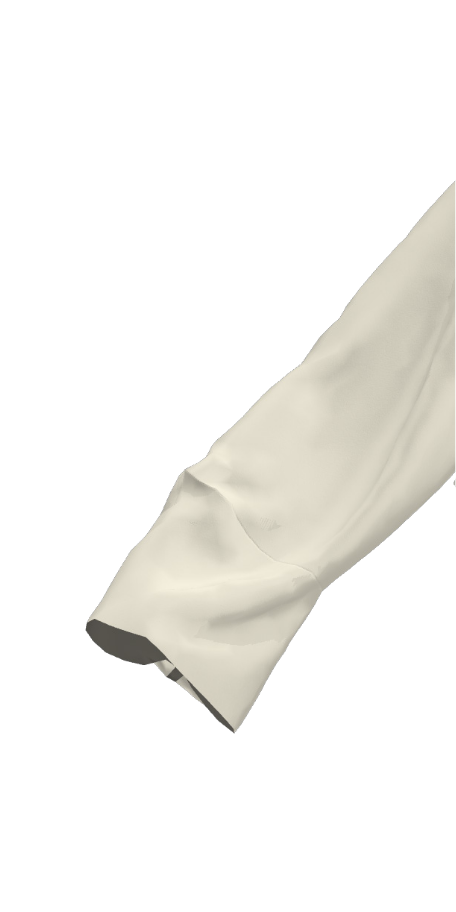
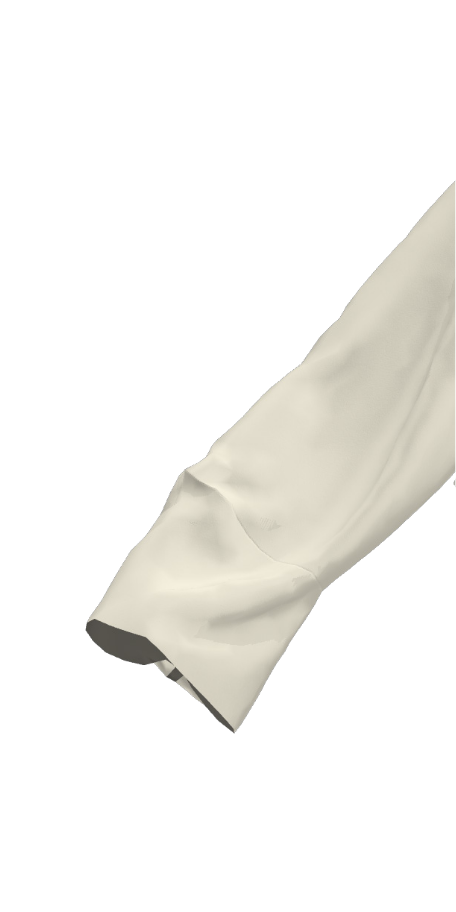

Long Tshirt
This Long Tshirt is based on the same pattern as the Cropped Tshirt, its just longer.
Considerations
The width of the cloth is approximately the circumference of the garment around the body. If you want a more voluminous form or are a larger size go for a wider cloth, likewise with you want a more fitted silhouette.
Recommendations
The drape or stiffness of the cloth will alter dramatically the final look of the garment. For a fluid drapey look, go for a chiffon, crepe de chine, or other soft fabric, for something more architectural chose a stiffer fabric.
The Long Tshirt shown in the photo is made of digitally printed silk organza. All the edges are pre-finished using digital embroidery, all joins are hand stitched with an insertion stitch and the form is modified through the body rotation and shoulder rotation. The shirt in the photo uses 130cm of 135cm wide Silk Organza. The model is a NZ size 10.


 



| 110cm | 50cm | 50cm |
| 110cm x 75cm |
The Make/Use Coat can be modified in a number of ways to suit your preferences. Click on the sleeve
and body tiles to cycle through the various styles. Your selections will be used to display garment
sizing and to determine the fabric size requirements.
The pattern templates required for your chosen garment will also be displayed. Hover over pattern pieces
to enlarge. To download and print the original full-sized templates, please click on the link provided.


Each Make/Use garment made in this method is unique to both the fabric and the user. The length of a Make/Use Long Tshirt can be altered to suit an individual's height or taste; a favourite fabric can be used to make the Long Tshirt and drastically alter its appearance; new iterations can be created by combining templates in ways dreamt up by the maker/user. The possibilities are literally endless.
- Using the Long Tshirt Grid file as a guide, mark half way between edges of fabric for Fabric Centre Line and ¼ Fabric Width (A) either side of this.
- Measure on your body the desired depth of sleeve (B) from your own shoulder down - this begins to determine how wide your sleeve is on your garment
- Measure on your fabric 1 x B to Shoulder Line, and 1 x B from Shoulder Line to Sleeve Depth.
- Finally measure from shoulder to finished desired length and then minus B, for C.
- Mark out C to determine finished length of Tshirt
- The intersections of Fabric Centre Line and Shoulder Line, as well as ¼ fabric width and Sleeve Depth are key anchors for placing the templates.
- Body Rotation template can be placed any where between Sleeve Depth and hem of garment. Sleeve swap can be placed anywhere between Shoulder Line and the top cut of garment flat.
Print: Print out using a standard printer the files only A4 and/or A3 paper or card and cut out the
dotted fill. Follow the instructions on the pages
Lasercut: Download files and have laser cut on
2mm card according to lasercutter specifications.
- Line up desired templates with grid and follow instructions printed on them. Mark horizontal and vertical lines with tailors chalk.